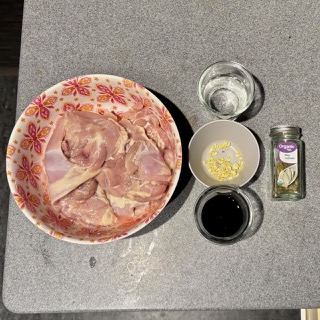
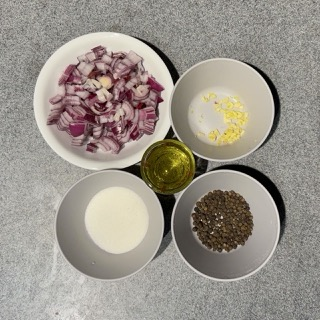
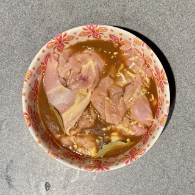
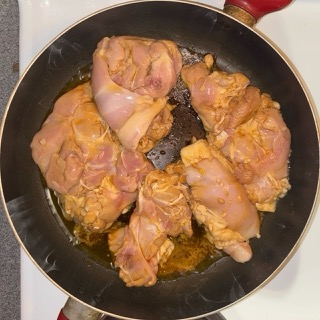
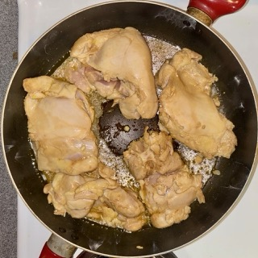
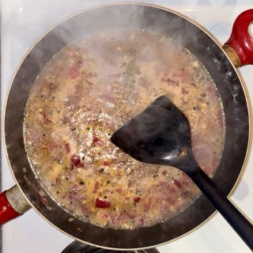

Serves: 3-4, Total Time: 45min
This is my favorite dinner entree to make! It's quick and easy, and it's my favorite Filipino comfort food. Over the past year, I've fine-tuned this recipe from one on Recipe Tin Eats that my mom recommended because it's similar to the way she makes it. At times, I ran out of ingredients and cooked for my roommate with a gluten allergy, so I've left those lessons under Substitution Tips below.
Allergens: Gluten in soy sauce (see substitution tips)
Ingredients
Marinating
- 6 chicken thigh fillets, boneless and skinless
- 6 garlic cloves, minced
- 1/3 cup soy sauce
- 1/3 cup + 2 tbsp white vinegar
- 3 dried bay leaves
Cooking
- 2 tbsp olive or coconut oil
- 1 small brown onion, diced
- 1 1/2 cups water
- 2 tbsp brown sugar
- 1 tbsp whole black pepper
- 6 peeled, medium-boiled eggs (optional)
Substitution Tips
- Gluten allergy/intolerance? Use 1/3 cup of coconut aminos! It'll have the same great flavor.
- Scaling the recipe up? Use less black pepper (it goes a long way).
- Out of brown sugar? You can substitute white sugar, or even replace the water with apple juice.
Instructions
Marinating
- Prepare the marinading ingredients. Save half of the minced garlic cloves for the cooking step. 
- Combine these ingredients into a bowl, and let marinate in the fridge for at least 20 minutes, or up to overnight.
Cooking
-


- Fully heat 1 tbsp oil in a skillet at medium high. Remove the chicken from the marinade and place it in the pan, saving the marinade. Sear each side until the chicken turns white, which takes about 1 minute.
- Set the chicken aside on a plate.
- Add the rest of the oil to the skillet, along with the garlic and onion. Cook for two minutes. 
- Add the reserved marinade, water, sugar and black pepper. Bring it to a simmer then turn heat down by 1 or 2. Simmer for 5 minutes.
- Add chicken smooth side down. If you are using eggs, add these to the skillet as well.
- After chicken reaches a simmer, set a timer for 15 minutes. Flip the chicken when the timer finishes.
- Continue simmering until the sauce has a jam-like consistency, coating the chicken enough to visibly change its color when flipped.
- If it does not reach this thickness after 15 minutes, remove chicken and continue simmering the sauce. Then, add the chicken back in.
- Coat chicken in glaze then serve over rice.


Imagery
Research Evaluation
Google Docs LinkSources
Recipes
Allrecipes: Unlike many other recipe websites, there's no long story or summary in between the images of the recipe and the steps and ingredients. It also places recipe reviews prominently, allowing me to find ones that are well-loved.
Recipe Tin Eats: I particularly like how the print view of the recipe is clear enough for me to leave on my phone while I cook, and I can modify the number of servings and see the ingredients scale on the fly.
Budget Bytes: The images of each step in the recipe are very helpful while prepping.
Other Websites
The New York Times: The way the NYT puts relevant images and the article's title first, and then the article's text in a prominent place next, is a great simple layout that I would love to model in my recipes so people can quickly access the steps.
Piazza: I don't think the rest of the design is particularly impressive, but the sidebar giving way to the primary content could also be a great way to make recipe steps and ingredients more prominent. This could also be extended for a website with multiple recipes that you could save to your sidebar!
St. Louis, MO: This website uses a minimalist design, but it also packs in a lot of resources without adding clutter. They must make their website accessible to everyone, so I think referencing this design would be a great way to make my recipe website easy-to-use for those in a hurry.